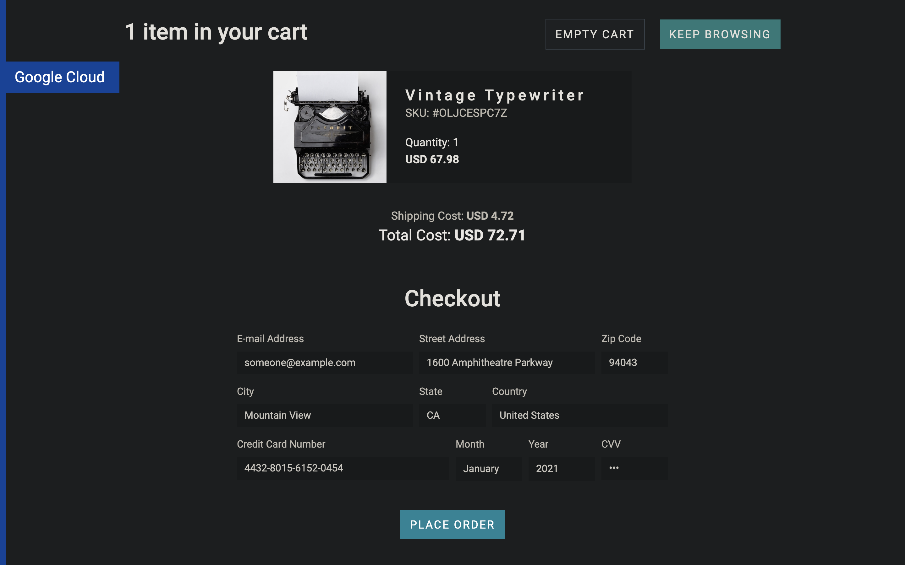
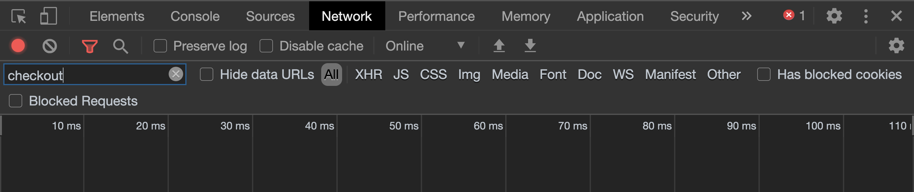
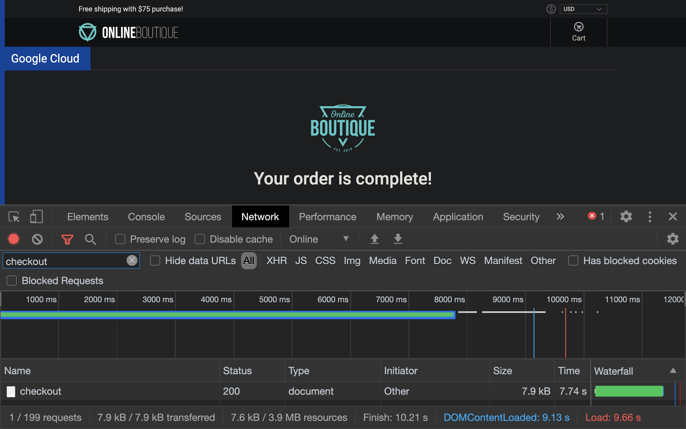
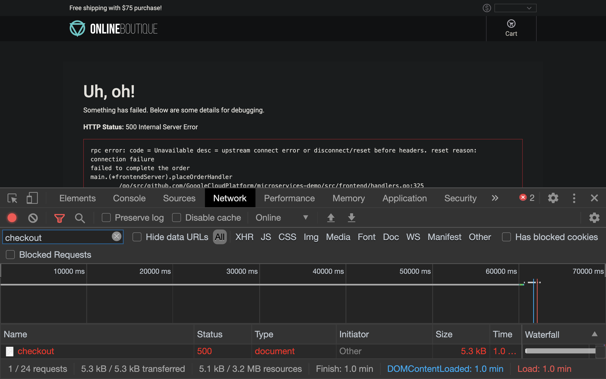
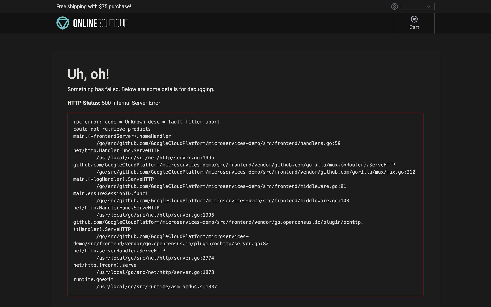

Ingress gateway
This chapter presents how to inject faults into service mesh to test application resilency against service failures.
Outline
In this chapter you will learn:
- What is Fault Injection.
- How to inject delay and abort faults into a service mesh.
Walkthrough
Fault injection is a testing method that introduces errors into a system to ensure that it can withstand and recover from error conditions.
Unlike other mechanisms for introducing errors such as delaying packets or killing pods at the network layer, Istio proxy enables injecting faults at the application layer. That allows operators to inject more relevant failures, such as HTTP error codes.
Istio supports two categories of faults, both configured using a VirtualService policy:
- delays - timing failures, mimic increased network latency or an overloaded upstream service,
- aborts - crash failures, mimic failures in upstream services (HTTP error codes or TCP connection failures).
In this chapter, we will inject both types of faults into the test application and observe how it handles the failure.
Inject HTTP delay fault
In this scenario we will inject a delay fault into the payment service.
Start with applying the fault policy:
$ kubectl -n default apply -f ./release/istio/paymentservice-fault-vs-1.yaml
virtualservice.networking.istio.io/paymentservice configured
Inspect its details:
$ kubectl -n default describe vs paymentservice
Name: paymentservice
Namespace: default
...
Spec:
Hosts:
paymentservice
Http:
Fault:
Delay:
Fixed Delay: 7s
Percentage:
Value: 100
Route:
Destination:
Host: paymentservice
Subset: v1
The above configuration injects 7s delay for 100% percent of the traffic to the payment service.
Now, visit the test application in your web browser. Order one item and proceed to the checkout stage:

Before placing the order, open the network analyzer tool provided by your web browser:
Filter out the requests to the checkout service:

Place the order. The operation should complete with the 7s delay:

The checkout service communicates with the payment service, hence the delay occurred.
The 7s delay was handled gracefully by the application. Let's rise the delay to 120s to emulate a severe network congestion:
$ kubectl -n default apply -f ./release/istio/paymentservice-fault-vs-2.yaml
virtualservice.networking.istio.io/paymentservice configured
Add another item and place the order. This time the application should fail and expose the 500 Internal Server Error to the user:

In production environment, applications must always hide internal errors from the end user. In addition, the application should configure a request timeout.
Inject HTTP abort fault
In this scenario we will inject an abort fault into the productcatalog service.
Apply the following fault policy:
$ kubectl -n default apply -f ./release/istio/productcatalogservice-fault-vs-1.yaml
virtualservice.networking.istio.io/productcatalogservice configured
Inspect its details:
$ kubectl -n default describe vs productcatalogservice
Name: productcatalogservice
Namespace: default
...
Spec:
Hosts:
productcatalogservice
Http:
Fault:
Abort:
Http Status: 500
Percentage:
Value: 30
Route:
Destination:
Host: productcatalogservice
Subset: v1
The above configuration injects 500 error for 30% percent of the traffic to the productcatalog service.
Refresh the main page of the test application several times to observe the error message exposed to the user:

Again, the application should hide the internal error from the user and instead display a gentle warning, for instance:
Product Catalog is temporarily unavailable. Sorry for inconvenience.`